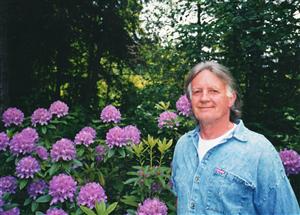
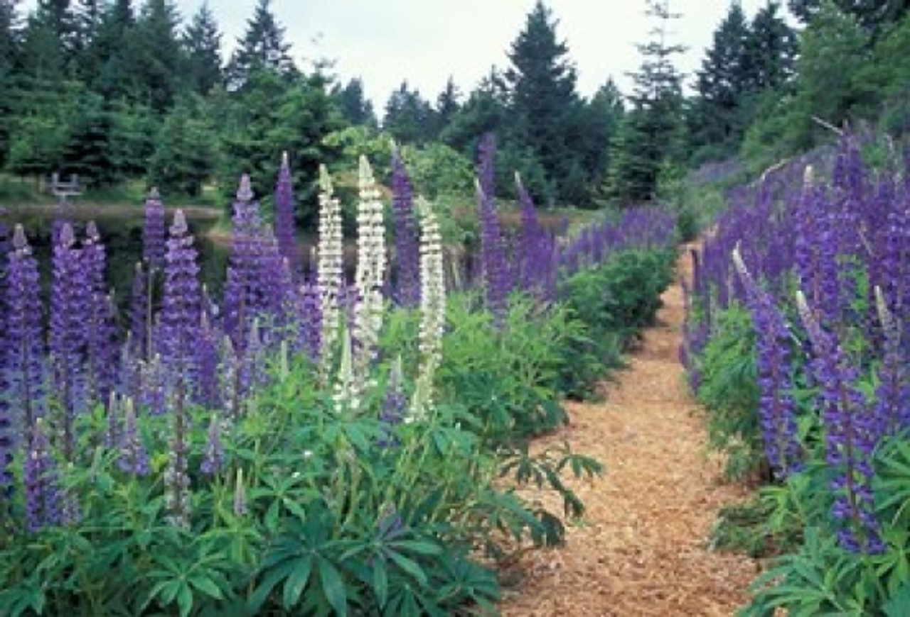

Nature's healing powers contained in this serene beauty bring a calmness to the soul.
Garden GalleryKitty Coleman Woodland Gardens is a labor of love, created by Bryan Zimmerman to share the beauty of his 24-acre forested land. Known for his Xmas Tree Farm and Santa's Barn in the Comox Valley, Bryan began clearing thick brush to reveal the natural beauty of the land. Over two years, he hand-built paths and carefully cultivated the landscape, using minimal equipment to preserve the environment. The gardens highlight over 3000 rhododendrons, alongside other plants and trees, blending seamlessly into the natural surroundings.
Woodland Gardens, Courtenay, BC has one of the largest rhododendron collections in Western Canada with over 3000 plantings. It is also home to a multitude of native plants, birds and wildflowers. Its 24 wooded acres are covered with bark mulch paths and many water features. It is recognized as one of the world's finest informal show gardens. We host two annual art shows, and our various Christmas programs throughout December. The gardens are open year round. We invite you to explore our website and look forward to seeing you at the gardens.
We are excited to introduce a new venue within the gardens, offering a range of entertainment throughout the year. From live music performances to seasonal festivals, the new venue provides the perfect setting for guests to experience the beauty of the gardens while enjoying year-round events.
This is a fictional website that was designed and coded as an educational exercise. It is not intended to be seen outside of the class environment. None of the content and images were approved by the business owner.
© Copyright 2005- 2024 | Bryan Zimmerman - Kitty Coleman Woodland Gardens. All Rights Reserved.